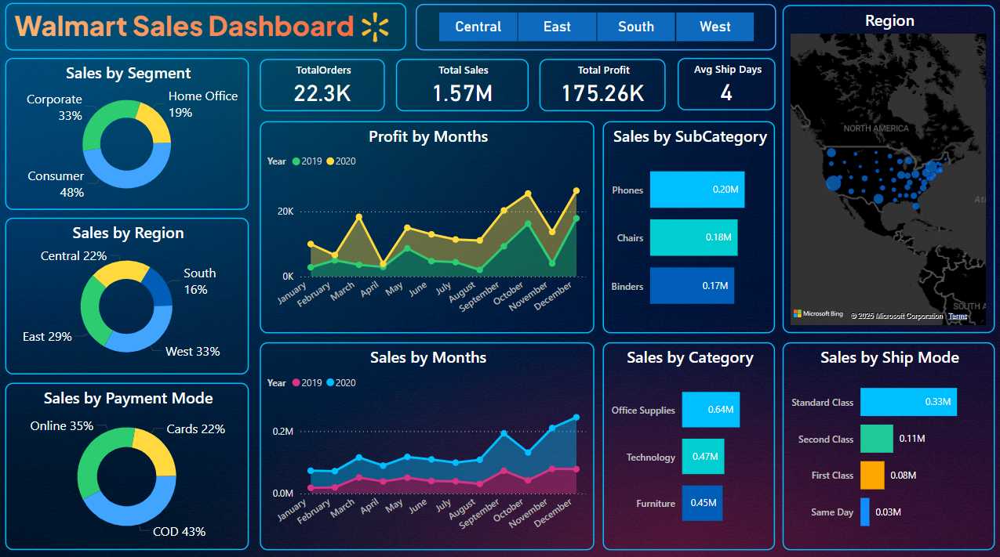
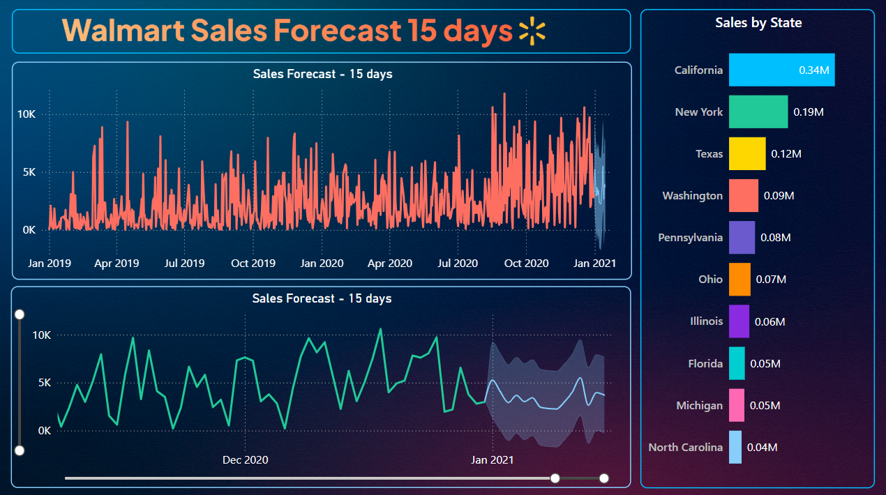

Introduction
Every day, thousands of people shop at Walmart... Buying everything from groceries to gadgets. But behind all those purchases is a story.
This analysis looks at Walmart's sales data to find out what's selling the most, which stores are doing well, and when sales go up or down.
It helps us understand what's working, what can be better, and how Walmart can keep customers happy and business growing.🤔
business problem
Walmart lacks clear visibility into regional sales performance, product profitability, customer segment behaviour, and delivery efficiency... This limits its ability to make data-driven decisions that boost profit margins, optimize inventory, enhance customer targeting, and improve operational effectiveness...🤕
Chapter 1: Data preprocessing
Before diving into the dashboards, we gave the data a little makeover! ✨
cleaned up messy column names, tossed out duplicates, filled in missing pieces, and got rid of anything we didn't need. Thanks to Power BI's Power Query Editor, the data was polished and ready for action-packed visualizations!
Chapter 2: overall dashboard
This Walmart dashboard gives a quick view of sales, profit, orders, and shipping. It shows who's buying, how they pay, what's selling best, and where the orders come from 🔥All in one place!

Key insights
- 👥 Customer Behavior ~
🔹Most customers are Consumers (48%) — A great group to target with offers.
🔹Cash on Delivery (43%) is the most used payment mode — Shows trust in paying after
delivery.
- 💵 Sales & Revenue Trends ~
🔹 Total Sales are $1.57M and Profit is $175K — strong overall performance.
🔹 Sales jump in October to December — good time for running sales or promotions.
🔹 2020 did better than 2019 in most months — shows positive growth.
- 🧾Product Insights ~
🔹 Office Supplies sell the most ($0.64M), followed by Technology and Furniture — can focus stock and ads here.
🔹 Phones, Chairs, and Binders are top-selling subcategories — great for highlighting in campaigns.
- 🚚 Shipping Info ~
🔹 Standard shipping is most popular — customers prefer affordable delivery.
🔹 Average shipping time is 4 days — decent, but can improve for better service.
- 📍Region Insights ~
🔹 West region brings in the most sales (33%), South the least (16%) — shows where to improve marketing.
🔹 Sales spread across the U.S. — strongest in central and eastern states.
Chapter 3: Forecasting dashboard
This dashboard Focusing on future sales trends and top performing states See coming in next 15 days and where sales are booming..😎

Key insights
- 📊 Sales Forecast for the Next 15 Days ~
🔹 Sales are predicted to slightly increase and remain stable over the next 15 days.
🔹 There is some fluctuation, but overall the trend is steady, with most days expecting sales between 3,000 to 7,000 units.
- 📈 Sales Pattern Over Time (Since Jan 2019) ~
🔹 Sales have shown many ups and downs over the years.
🔹 A noticeable rise in sales activity started around mid-2020.
🔹 Forecasting begins after the last recorded data around Jan 2021.
- 🗺️ Top States by Total Sales ~
🔹 California leads in sales (0.34M), indicating strong demand or a large customer base.
🔹 New York and Texas come next, but with significantly lower sales than California.
🔹 Other states have smaller sales compared to the top three.
🔹 The big difference means what works in California can be used in other states to improve their sales.
business solution
To help Walmart improve its service and grow the business, the following solutions should be implemented
- 🎯Focus on the Right Customers ~
🔹 Target Consumers with special deals — they make up 48% of buyers.
🔹 Promote digital payments but also reward loyal Cash on Delivery users.
- 📦 Improve Product Planning ~
🔹 Keep more stock of top-selling items like Phones, Chairs, and Binders.
🔹 Boost ads for Office Supplies — they bring in the most sales.
- 🌍 Grow in Low-Sales Regions ~
🔹 Use West region's successful strategies in weaker areas like the South.
🔹 Run local marketing and understand what those customers need.
- 🚚 Make Delivery Faster ~
🔹 Offer express or 2-day delivery as an upgrade option.
🔹 Optimize warehouse locations to reduce the 4-day average shipping time.
- 🗓️ Use Seasonal Trends Wisely ~
🔹 Plan big campaigns for October and December — sales at peak during this time.
🔹 Prepare in advance with enough stock and offers.
- 📈 Plan Ahead with Forecasts ~
🔹 Sales will stay stable in the next 15 days — use this to manage stock and staff.
🔹 Watch for small changes and stay ready with backup.
- 🏆 Learn from Top-Performing States ~
🔹 California is leading in sales — use similar tactics in other states.
🔹 Adjust offers, pricing, and delivery based on what works best region-wise.
📊 Result :
Walmart will see higher sales, better profit margins, and improved customer satisfaction
by targeting the right audience, optimizing products and delivery, and using data to drive
regional and seasonal strategies. This will lead to smarter decisions and stronger nationwide growth.
See code here!
Projects🔥
Every dataset has a heartbeat💓 here's how I tune in and make it sing.🎺
Go to Projects🔥
Home🌟
Return to the heart where it all started.❤️
Go to home🌟